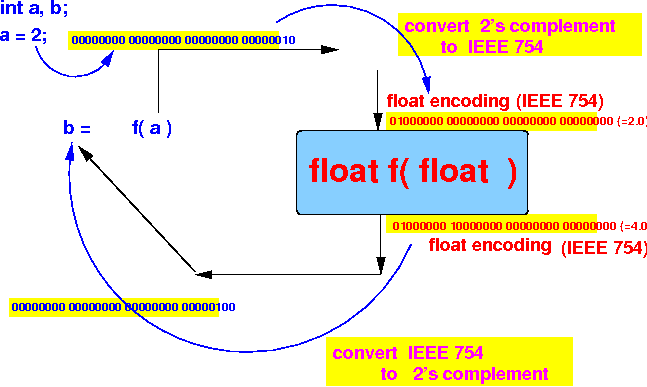

- Conversion rule:
- If a function call uses
mismatched data types
Example:
float f(float x) { return x*x; } main( ) { int a, b; b = f(a); // (1) a is int, but f(float ..) uses a float parameter !!! // (2) b is int, but float f( .. ) returns a float value }then:
- The input parameters
must
be converted
to the
data type of the
parameter variable of the
function
- The return value must be converted to the data type of the receiving variable of the function call
- The input parameters
must
be converted
to the
data type of the
parameter variable of the
function
- If a function call uses
mismatched data types
-
Example:
- Consider the following
function call to
float f(float x):
float f(float x) { return x*x; } int main() { int a, b; a = 2; // repr: 00000000 00000000 00000000 00000010 b = f(a); // a is int, but f( ) uses a float parameter !!! // Also: f( ) returns a float value, b is an int !!! } - The following
data type conversions
will occur
automatically:

- Consider the following
function call to
float f(float x):
- Program that makes
the conversion
explicit:
float f( float x) { printBitFloat(x); float r; r = x*x; printBitFloat(r); return(r); } int main(int argc, char *argv[] ) { int a, b; a = 2; printBitInt(a); b = f(a); printBitInt(b); }Output of the program:
a = 2 , repr in bits: 00000000000000000000000000000010 Inp param x = 2.000000 , repr in bits: 01000000000000000000000000000000 Return value = 4.000000 , repr in bits: 01000000100000000000000000000000 b = 4 , repr in bits: 00000000000000000000000000000100
- Example Program:
(Demo above code)

- Prog file: click here
How to run the program:
- Right click on link(s) and
save in a scratch directory
- To compile: gcc func-call-conv1.c
- To run: a.out